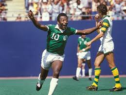

⚽ Soccer

Cristiano Ronaldo
With five Ballon d’Ors and over 900 career goals, Ronaldo’s athleticism, professionalism, and marketing acumen reshaped modern football—pioneering fitness regimes and branding in sport. :contentReference[oaicite:1]{index=1}

Lionel Messi
A genius dribbler and record-breaker with seven Ballon d’Ors and a 2022 World Cup win, Messi’s vision and humility advanced youth development and inspired global football artistry. :contentReference[oaicite:2]{index=2}

Pele
The “King of Football,” Pele popularized soccer worldwide, winning three World Cups and defining Brazil’s flair, helping guide football into television-era globalization.